library(hockeystick)
ml_co2 <- get_carbon()
plot_carbon(ml_co2)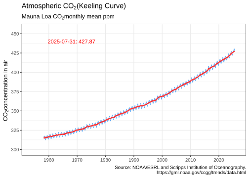
hockeystick includes functions to download and visualized climate data. Data is optionally cached.
library(hockeystick)
ml_co2 <- get_carbon()
plot_carbon(ml_co2)
emissions <- get_emissions()
plot_emissions(emissions)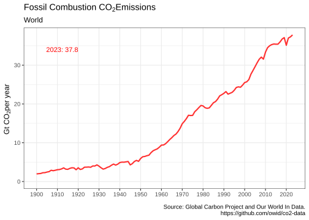
plot_emissions_with_land(emissions)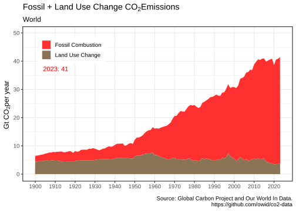
emissions_map()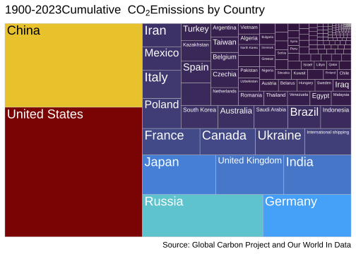
anomaly <- get_temp()
plot_temp(anomaly)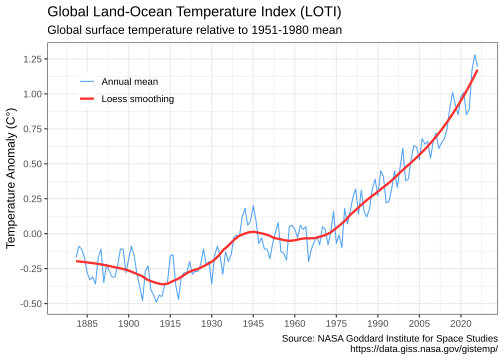
plot_carbontemp()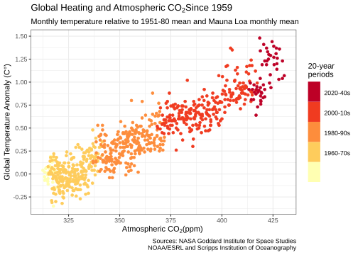
warming_stripes()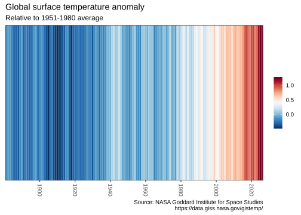
warming_stripes(stripe_only = TRUE, col_strip = viridisLite::viridis(11))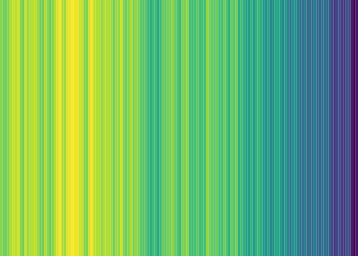
gmsl <- get_sealevel()
plot_sealevel(gmsl)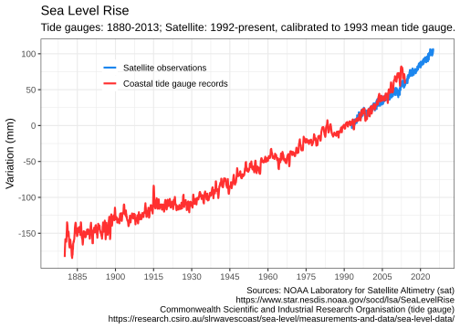
seaice <- get_seaice()
plot_seaice(seaice)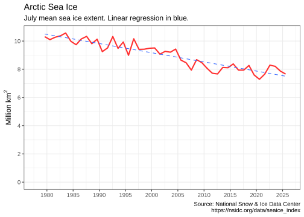
get_seaice() arguments can be modified to download Antarctic sea ice, and allow any month.
You can also visualize sea ice by month and year:
arcticice <- get_icecurves()
plot_icecurves(arcticice)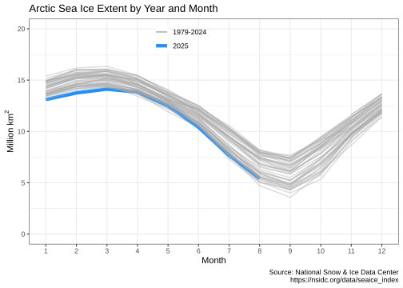
hurricanes <- get_hurricanes()
plot_hurricanes(hurricanes)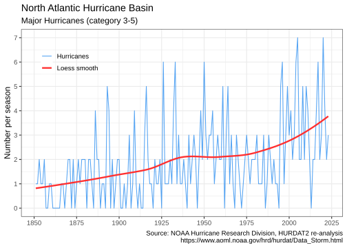
plot_hurricane_nrg(hurricanes)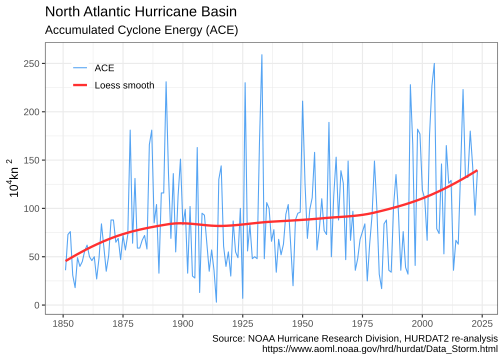
ch4 <- get_methane()
plot_methane(ch4)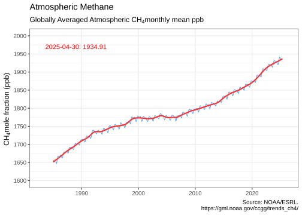
vostok <- get_paleo()
plot_paleo(vostok)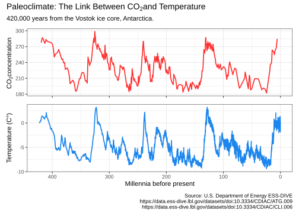
By default, no climate data is cached, and all data is downloaded every time any of the get_ functions is called. To cache data for future use, use the write_cache = TRUE option, available in all of the get_ functions. To download and cache all data use hockeystick_update_all(). To view the files, date, and size of cached data use hockeystick_cache_details(). To re-download data from the source use the use_cache = FALSE argument in any of the get_ functions, for example: get_carbon(use_cache = FALSE, write_cache = TRUE). To delete all cached data use hockeystick_cache_delete_all().
Users may also cache data by default by adding options(hs_write_cache = TRUE)to their script or .Rprofile file.